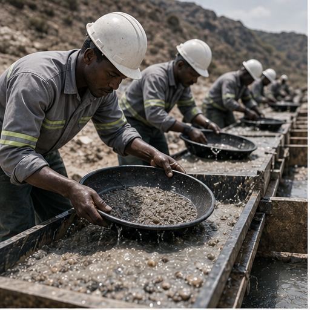
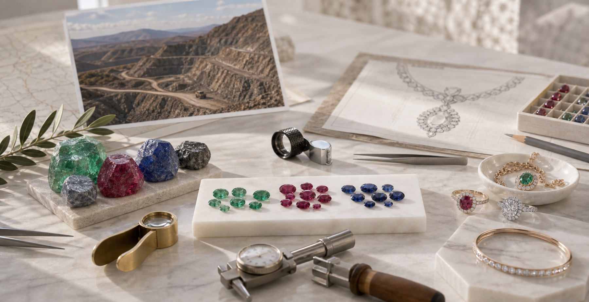
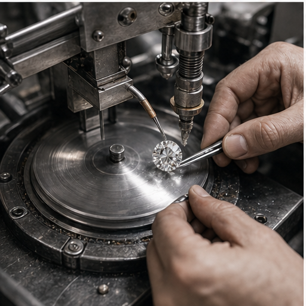
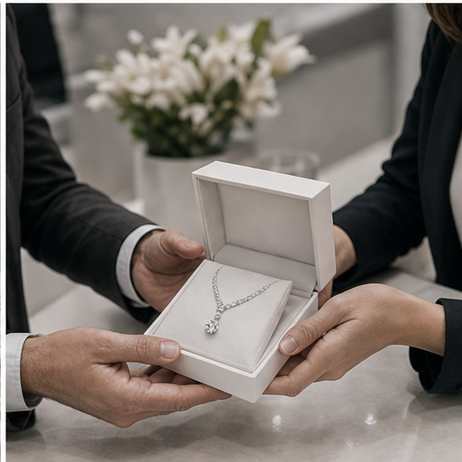

01
Mining
Material is recovered under controlled site procedures with attention to logging, initial safeguarding, and accurate transfer into the next stage of handling.

Traceability
Traceability is central to how we explain quality, responsibility, and value to clients. By documenting movement from extraction through sorting, cutting, crafting, and delivery, we create a clearer chain of custody that supports confidence in both origin and finished presentation.

Material is recovered under controlled site procedures with attention to logging, initial safeguarding, and accurate transfer into the next stage of handling.

Stones are reviewed by type, size, condition, and commercial potential so that downstream planning can be aligned with market, manufacturing, or auction needs.

Cutting teams shape and polish selected material with close grading control, balancing beauty, yield, and long-term value in every finished stone.
Approved stones move into jewelry development, setting, and finishing where design integrity and production quality are documented before final release.

Final presentation may take the form of private sale, tender, wholesale supply, or collector fulfillment, with packing, documentation, and handover handled in a controlled way.